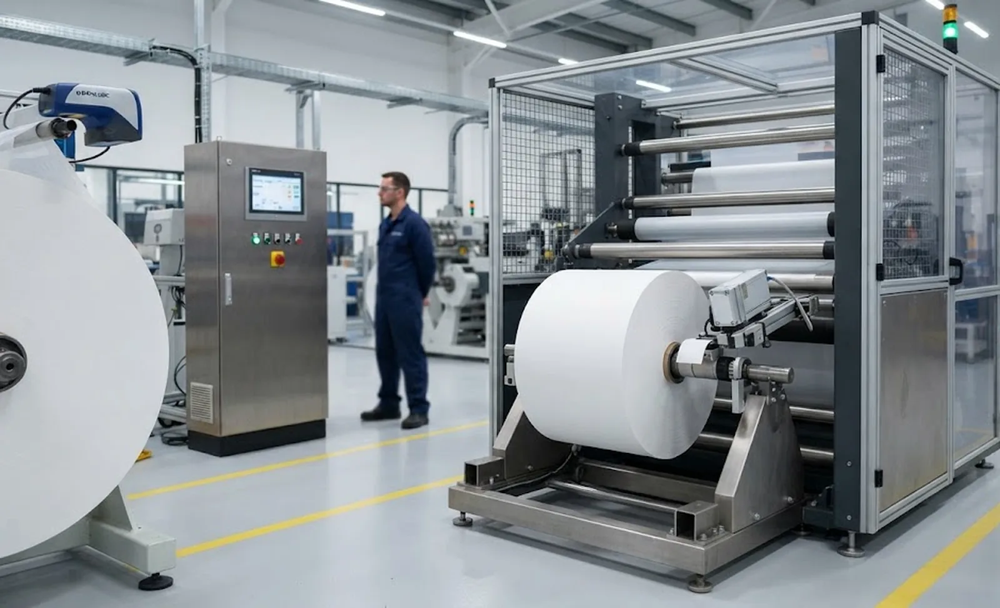
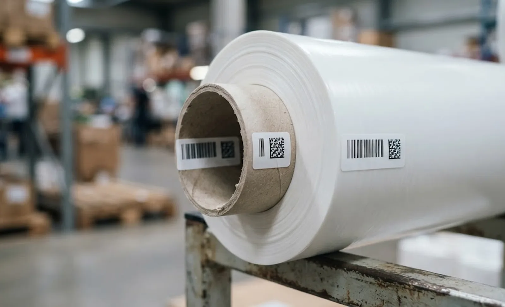

Published October 5, 2026 | By HDPTH Technical Editorial Team

Slitting is where upstream data usually dies. The supplier recorded a reel number, your warehouse received it, quality released it — and then one jumbo was cut into thirty or forty finished rolls that went into stock with nothing but a width written on the wrap. When a customer reports a defect six weeks later, nobody can say which parent reel, which knife position or which shift produced that roll, so the investigation becomes a guess. This guide covers what to capture, which hardware produces it, and how to make traceability a testable deliverable.
Decide the level you actually need
Batch-level traceability links rolls to a production run: cheap, and it answers few questions. Roll-level traceability gives every finished roll its own identifier linked to the parent reel and slit position — enough to answer a complaint, contain a problem and analyse it. Position-level adds the knife lane and its history, which is what proves that a defect track always comes from the same knife station. Most converters need roll-level as a minimum, and position-level where narrow rolls are cut several abreast. Settle the level before the machine specification is frozen, because retrofitting identification later is far more disruptive than wiring it in.
What to capture for every finished roll
A useful field list is short enough to be maintained by hand and complete enough to close an investigation. Anything you cannot record automatically will eventually be wrong.
| Field | Source | Why it matters |
|---|---|---|
| Parent reel identifier | Scanner or manual entry at the unwind | Links the finished roll back to the incoming lot |
| Slit lane / position | Knife layout in the PLC recipe | Shows which knife made the roll |
| Width and length or weight | Encoder and scale | Yield, shipment accuracy, complaint matching |
| Winding recipe and timestamps | PLC recipe and clock | Reconstructs the condition the roll was made in |
| Operator, shift, knife set | Shift log and setup record | Human and tooling context for the run |
Hardware that produces the data
At the unwind, a fixed or handheld scanner reads the parent reel barcode and the PLC stores it for the whole run. On a line cutting several narrow rolls from one jumbo, that identifier must be combined with the lane number to produce a unique roll identity, so the knife layout has to exist as machine data rather than as a sketch on the setup sheet.
Length is normally derived from an encoder on a measuring roller rather than from the drive, because drive-derived length slips as roll diameter and web tension change. Identification at the rewind end is either pre-printed, printed at a remote station, or printed and applied automatically by a print-and-apply unit beside the winder.

Label placement, materials and print method
Placement is a compromise between protection and accessibility. A label on the core survives handling and travels into the customer's machine, but it is awkward to scan in a warehouse. A label on the outer wrap is fast to scan and disappears the moment the roll is unwrapped. Converters commonly print two or three labels with the same identifier — core, wrap and pallet — so the number is never more than one step away.
Adhesive and print method decide whether the label is still there at the end of the journey. Dusty, cold or damp roll surfaces need an adhesive specified for low surface energy or low temperature, and industrial environments favour thermal-transfer printing over direct thermal, because direct-thermal images fade with heat, abrasion and time. If printing happens beside a slitting machine, dust and fibre are a printer failure mode in their own right; enclosure and a cleaning interval belong in the maintenance plan.
Identifiers and standards worth using
Most converters build on the GS1 system: a GTIN for the product, an SSCC for the logistic unit, carried in GS1-128 or Data Matrix symbols, with EPCIS used when events must be shared electronically with a customer or logistics partner. IEC 61406 sets minimum requirements for unique identification of objects. The IQ/OQ documentation expectations of regulated customers usually sit on top of the same numbering scheme.
The decisions that cause trouble later are governance, not symbology: who allocates an identifier, how a duplicate is rejected, how it survives a rewound or reworked roll, and whether a corrected label invalidates the old number. ISO 9001 requires identification and traceability where necessary, so a customer audit will ask these questions.
Integration pitfall: the roll is finished before the data is
The most common integration mistake is printing the label too early. If the label is generated when the roll starts, it cannot contain the final length, the weight or any defect flag raised by the inspection system, and it cannot record that the roll was cut short. The clean pattern is to accumulate data during winding, finalise the record at doffing, then print. Related data flows — machine counters, recipes and downtime — are covered in the data logging and ERP integration and MES integration guides.
Two further failure modes deserve design attention. Timestamps drift when the PLC, printer and MES each keep their own clock, so a roll can appear labelled before it was wound — synchronise the clocks. A network interruption silently orphans rolls, so records must buffer locally and reconcile afterwards; the connected machine guide covers the plant-network angle.
Writing traceability into the RFQ and the acceptance test
In the specification, state the field list, the identifier scheme, where each label is printed and applied, the protocol used to move data to your MES, and what happens when the printer or scanner is unavailable. Name the party that owns identifier allocation; otherwise two lines in the same plant will eventually generate the same roll number.
Then make it part of the factory acceptance test. Run a batch of at least twenty rolls and verify that every label maps to the correct parent reel and lane with timestamps matching the PLC record. Then break it deliberately: stop the scanner, disconnect the network, power down the printer and re-present an identifier that has already been used. Record how the system behaved, then repeat the check on site against real labels and warehouse scans during the site acceptance test.
Need finished-roll data your customers can audit?
Send your required field list, identifier scheme, MES interface and label locations. HDPTH will propose a wound-roll identification and labelling arrangement and prove it during factory acceptance.
Discuss Roll TraceabilityQuestions to put to every vendor
- Which fields are captured automatically, and which does an operator type in?
- Who allocates the roll identifier, and how does the system reject a duplicate?
- When is the label printed, and what happens if the printer is offline?
- How is length measured, and how accurate is it at the largest roll diameter?
- What happens to the traceability record if the network drops mid-run?
Frequently asked questions
What is roll-level traceability on a slitter rewinder?
Every finished roll leaving the winder carries a unique identifier linked to the data that produced it: the parent reel, the slit lane, width and length or weight, the winding recipe and timestamps, the knife setup, and the operator or shift. Batch-level traceability only says which run a roll came from; roll-level traceability says which parent reel and which knife position made one specific roll.
Where should the label be placed on a finished roll?
Place at least one label where it survives handling and one where it can still be read after the wrap comes off. A label on the core is protected and travels with the roll into the customer's process; a label on the outer wrap scans easily in the warehouse but disappears at unwrap. Many converters print both with the same identifier, plus a third on the pallet.
Do I need a print-and-apply labeller on the winder?
Only if the roll data is not final until after doffing. Length, weight and defect flags are usually known once the roll is complete, so a printer that receives data from the PLC at that moment and applies the label automatically is the reliable option. If the identifier is a simple pre-allocated number, pre-printed or handheld-printed labels can be enough.
How do I test traceability at factory acceptance?
Run a defined batch, typically twenty or more finished rolls, and verify that every label maps to the correct parent reel and slit lane, with timestamps matching the PLC data. Then break things on purpose: stop the scanner, pull the network, power down the printer and re-present an identifier that has already been used.
Which identifiers should we use for finished rolls?
Most converters build on the GS1 system: a GTIN for the product and an SSCC for the logistic unit, carried in GS1-128 or Data Matrix symbols, with EPCIS used when supply-chain events must be shared electronically. Decide who allocates the identifier, how duplicates are rejected, and how a rewound or reworked roll gets a new number.
Sources
- GS1 General Specifications: the rules behind GTIN, SSCC, GS1-128 and Data Matrix identifiers used on finished rolls
- EPCIS: the GS1 standard for capturing and sharing supply-chain event data such as shipping and receiving
- ISO 9001: identification and traceability requirements that a customer audit will test against your records
- OPC Foundation: OPC UA, the interoperability standard commonly used to move machine data to a plant system